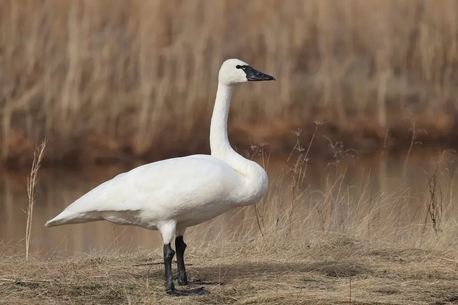

鸟类 · 动物界
小天鹅 Cygnus columbianus

体型比大天鹅小的白色天鹅，喙基黄斑较小而圆，迁徙时成群飞越北半球，在中国长江流域和沿海越冬。
- 分类
- 门脊索动物门纲鸟纲目雁形目科鸭科属天鹅属
- 栖息环境
- 北极苔原湿地、湖泊和沼泽，越冬于长江流域湖泊与沿海滩涂
- 地理分布
- 繁殖于北极和亚北极湿地，越冬于欧洲西部、东亚沿海和北美海岸
- 保护级别
- IUCN 无危（LC）；中国国家二级保护动物
物种志
小天鹅体长 115–146 cm，体重 3.4–7.8 kg，翼展 168–211 cm。它的全身羽毛洁白，喙黑色，喙基有一小块黄色斑，黄色区域较小而圆钝，这是与大天鹅区分的关键；腿黑色。幼鸟羽毛灰褐色，喙色较淡。飞行时颈部伸直，姿态优美。
小天鹅在北极苔原和亚北极湿地带繁殖，包括俄罗斯北部和北美北部，冬季南迁到欧洲西部、东亚沿海和北美东西海岸。中国长江流域的湖泊、沿海滩涂和农田是小天鹅的重要越冬地。它们以水生植物的根茎、茎叶和谷物为食，也吃少量水生动物。繁殖期每窝产卵 4–5 枚，孵化约 30–32 天。小天鹅是大天鹅的近亲，但体型更小、喙基黄斑更小，目前被列为无危物种，中国将其列为国家二级保护动物。
形态与习性
- 食性水生植物根茎、茎叶和谷物
- 体长115–146 cm
- 体重3.4–7.8 kg
- 翼展168–211 cm
- 繁殖每窝 4–5 枚卵，孵化约 30–32 天
- 寿命野外约 15–20 年
- 辨识体型比大天鹅小，喙基黄斑小而圆
趣味知识
- 小天鹅与大天鹅外形相似，但体型更小，喙基的黄斑也更小更圆。
- 它们从北极苔原一路南迁，中国长江流域是重要的越冬地。
- 小天鹅飞行时颈部伸直，队列整齐如一条白线。
- 幼鸟羽毛灰褐色，需要到第二年才变成纯白色。